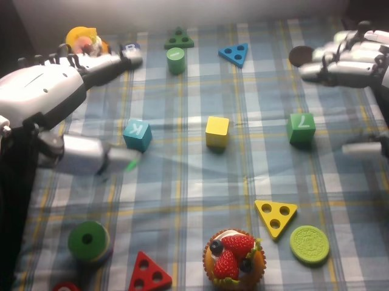

RoboCOIN · Airbot MMK2 · stack_block/episode_000004
Episode 000004

Annotation
From the dedicated visual review of this video (humanoid_action_v1). Plain text · JSON
Observed outcome
- Status
success_visible
- Description
A three-cube vertical stack stands at the middle: yellow at the bottom, the blue 'K' cube in the middle, the green '7' cube on top. The green cube appears slightly rotated and leaning relative to the blue cube while being placed (frames 170-198) and settles flatter by about frames 202-210, and the stack remains standing at the clip end. The right hand is still lifting away at frame 213.
Hand roles
- Left
Robot's left hand (image-left): active in frames 0-120. It pinches the blue lettered cube between its thumb-side digit and fingers, lifts it, carries it over the yellow cube, lowers it on top, releases and withdraws to the left, then stays open and idle from about frame 120 to the end. It does not stabilize the stack during the right-hand placement.
- Right
Robot's right hand (image-right): open and static at the right edge until about frame 104. It then reaches to the green numbered cube, closes its fingers around it (frames 130-138), lifts (144), carries it up and left, lowers it onto the blue cube (158-170), holds it while it settles (170-206), then opens and lifts away (206-213).
Coordination
Strictly sequential, no hand-to-hand transfer or simultaneous manipulation: the left hand finishes its placement and withdraws (frames 100-119) before the right hand grasps the green cube; the left hand stays idle afterwards. The left hand's placement forms the yellow-blue base that the right hand's green cube is placed onto.
Robot-side evidence
- Conclusion
The hand at image-left is the robot's left hand and the hand at image-right is the robot's right hand. Image left matches robot left in the head view.
- Evidence
- Telemetry (observation.state, joint names from dataset info.json): summed absolute frame-to-frame change in left_arm joints 1-6 and left_hand joints 1-12 is largest in frames 0-120 (the image-left hand grasps, lifts and places the blue cube), while right_arm joints 1-6 are nearly still until about frame 100 and move mostly in frames 100-170; right_hand joints 1-12 show their large closing motion in frames 120-145 (grasp of the green cube) and opening in 170-214.
- cam_left_wrist_rgb at frame 50 shows the blue cube beside the hand; cam_right_wrist_rgb at frame 140 shows the green cube held beside the hand, matching the head-view assignment.
- Publisher instruction assigns the first (square block) task to the left hand and the second (cylindrical block) task to the right hand, which agrees with the visible order, though it was not used as the sole evidence.
- Confidence
high
Chronology
| Frames | Observation |
|---|---|
| 0–27 | Initial state: yellow cube in the middle, blue cube marked 'K' near image-left, green cube marked '7' at image-right; other toys (blue and green cylinders, triangles, discs, a cupcake) are scattered and unused. Robot's left hand (image-left) is open at the left edge beside the blue cube; the right hand (image-right) is open and static at the right edge. The left arm swings in and the left hand lowers over the blue cube with its lower digit (thumb) beneath the cube's near side and fingers curling over the top. |
| 28–45 | Left hand closes on the blue cube, pinching it between the lower thumb-side digit and the fingers above (frames 28-44); the cube stays on the table at first. Right hand stays open and static. |
| 46–62 | Left hand lifts the blue cube off the table (motion-blurred and clearly raised at frame 52-54) and carries it right toward the yellow cube (frames 56-62), with the arm rising into view. |
| 63–78 | Left hand lowers the blue cube onto the top of the yellow cube (blue cube in contact with the yellow cube from about frame 64-66, resting on it by frame 72) and holds it there with the fingers still around it. |
| 79–100 | Left hand stays at the stack; the grip loosens and the cube remains resting on the yellow cube (frames 84-96, thumb and fingers still adjacent to the blue cube). By frame 100 the hand is beginning to open. |
| 101–119 | Left hand lifts away from the blue cube (frames 104-112, motion-blurred) and withdraws up and to the left; the blue-on-yellow stack stays in place. The right arm begins to move at about frame 104 and the right hand rises from the right edge and opens wider (frames 110-120), moving toward the green cube. |
| 120–141 | Left hand comes to rest, open and nearly horizontal, at image-left and stays idle from here to the end. Right hand descends to the green cube, fingers extended past it (frames 120-128), then closes its fingers around the cube's left side with the thumb-side digit on the right (frames 130-138); the cube is gripped but still on the table. |
| 142–158 | Right hand lifts the green cube clear of the table (frame 144), carries it up and left (frames 146-152, hand and forearm entering the top-right of the view), and brings it above the blue cube (frames 154-158). |
| 159–171 | Right hand lowers the green cube onto the blue cube (contact about frames 158-164); the stack of yellow, blue and green is formed, with the right hand's fingers still around the green cube. |
| 172–199 | Right hand keeps holding the green cube on the stack; the cube sits tilted/leaning on the blue cube (frames 170-198). The left hand is idle, so the stack is not supported by it. |
| 200–207 | Right hand's fingers still press the green cube's left side at frame 200-202; the cube settles flatter on the blue cube (frames 202-206) and the hand begins to open and lift away. |
| 208–213 | Right hand lifts up and to the left away from the stack (motion-blurred at frame 213). The yellow, blue, green stack stands with the green cube on top, slightly turned relative to the blue cube. The clip ends while the right hand is still withdrawing. |
Clip selection
Complete single-task clip retained: the left hand places the blue cube on the yellow cube, then the right hand places the green cube on the blue cube. These are ordinary phases of one stacking task, so the full video is kept without cropping or a first_substep.
Differences from the publisher annotation
- The publisher instruction says 'square building blocks in the center' placed by the left hand and 'cylindrical building blocks on top' by the right hand. Visibly both moved objects are cubes: the left hand places a blue cube marked 'K' on a yellow cube, and the right hand places a green cube marked '7' (not a cylinder) on top. The stack is built at the yellow cube's position in the middle of the table, which fits 'center'. Several unrelated toys (cylinders, triangles, discs) are not touched.
- The scene annotation's colour/position list does not match the head view: it puts the green and red blocks front-left, the blue block back-left, the purple block back-right and an eyeglass case back-right, while the visible moved blocks are the blue cube at image-left, the yellow cube in the middle and the green cube at image-right; no red/purple blocks or glasses case are used.
- Subtask labels call the end effectors 'grippers', but the robot has five-finger dexterous hands.
- Subtask timeline: the left 'Grasp blue' label ends at frame 44 and 'Place blue on yellow' spans 45-100, which includes the lift and carry (46-62) and the release (79-100). 'Grasp the green block' spans 101-140, but the right hand only closes on the green cube about frames 130-138 and the label includes the left hand's withdrawal and the right hand's approach. 'Place green on blue' spans 141-207 and includes lift, carry, lowering and the settling hold; 'End' begins at frame 208 while the right hand is still releasing and withdrawing until 213.
Uncertainties
- Exact finger contact points on the two cubes are partly occluded by the hands in the head view; 'thumb and fingers' reflects the visible lower digit with the light and the upper fingers at frames 36 and 138.
- The instant the left hand fully releases the blue cube is not sharply visible (the hand lingers beside it in frames 84-100); release is read from the hand lifting away at about frames 100-104 with the cube staying on the yellow cube.
- The moment the right hand releases the green cube is read as about frames 202-208; before that the fingers are in contact with the cube's left side and the cube leans. The final tilt of the green cube relative to the blue cube is small and perspective-dependent.
- The right hand has not fully cleared the stack at the end of the clip (frame 213 is motion-blurred).
Complete review record action_review.json
{
"prompt_protocol": "humanoid_action_v1",
"prompt_protocol_note": "RoboCOIN Airbot MMK2 is a dual-arm robot with five-finger dexterous hands, not a Humanoid Everyday or NVIDIA GR1 dataset. humanoid_action_v1 is applied by analogy: robot-relative left/right hand, separate per-hand roles, coordination order, per-hand contact changes and the actual end state, with the shared constraint sentence appended verbatim.",
"prompt_provenance": "visually_authored_from_video_and_initial_frame",
"dataset": "RoboCOIN/Airbot_MMK2_stack_block",
"task": "stack_block",
"episode_id": "episode_000004",
"generation_camera": "cam_head_rgb (robot first-person head camera)",
"source_video": "../../original/videos/chunk-000/observation.images.cam_head_rgb/episode_000004.mp4",
"generation_video": "../video.mp4",
"conditioning_first_frame": "../first_frame.png",
"action_prompt": "../actiongeneration_prompt.txt",
"source_frame_count": 214,
"fps": 30,
"resolution": [
640,
480
],
"selected_source_frame_start": 0,
"selected_source_frame_end_exclusive": 214,
"selection_reason": "Complete single-task clip retained: the left hand places the blue cube on the yellow cube, then the right hand places the green cube on the blue cube. These are ordinary phases of one stacking task, so the full video is kept without cropping or a first_substep.",
"usable_prompt": "The robot's left hand pinches the blue lettered cube between its thumb and fingers, lifts it, sets it on top of the yellow cube, then opens and withdraws to the left. Afterward the right hand reaches in, closes its fingers around the green numbered cube, lifts it, carries it left, and lowers it onto the blue cube, then lets go and rises away while the left hand stays idle. The result is a three-cube stack of yellow, blue and green, the green cube slightly turned. Keep the camera fixed; preserve robot geometry, physically valid joint motion, and normal gripper opening and closing.",
"chronology": [
{
"frames": [
0,
27
],
"observation": "Initial state: yellow cube in the middle, blue cube marked 'K' near image-left, green cube marked '7' at image-right; other toys (blue and green cylinders, triangles, discs, a cupcake) are scattered and unused. Robot's left hand (image-left) is open at the left edge beside the blue cube; the right hand (image-right) is open and static at the right edge. The left arm swings in and the left hand lowers over the blue cube with its lower digit (thumb) beneath the cube's near side and fingers curling over the top."
},
{
"frames": [
28,
45
],
"observation": "Left hand closes on the blue cube, pinching it between the lower thumb-side digit and the fingers above (frames 28-44); the cube stays on the table at first. Right hand stays open and static."
},
{
"frames": [
46,
62
],
"observation": "Left hand lifts the blue cube off the table (motion-blurred and clearly raised at frame 52-54) and carries it right toward the yellow cube (frames 56-62), with the arm rising into view."
},
{
"frames": [
63,
78
],
"observation": "Left hand lowers the blue cube onto the top of the yellow cube (blue cube in contact with the yellow cube from about frame 64-66, resting on it by frame 72) and holds it there with the fingers still around it."
},
{
"frames": [
79,
100
],
"observation": "Left hand stays at the stack; the grip loosens and the cube remains resting on the yellow cube (frames 84-96, thumb and fingers still adjacent to the blue cube). By frame 100 the hand is beginning to open."
},
{
"frames": [
101,
119
],
"observation": "Left hand lifts away from the blue cube (frames 104-112, motion-blurred) and withdraws up and to the left; the blue-on-yellow stack stays in place. The right arm begins to move at about frame 104 and the right hand rises from the right edge and opens wider (frames 110-120), moving toward the green cube."
},
{
"frames": [
120,
141
],
"observation": "Left hand comes to rest, open and nearly horizontal, at image-left and stays idle from here to the end. Right hand descends to the green cube, fingers extended past it (frames 120-128), then closes its fingers around the cube's left side with the thumb-side digit on the right (frames 130-138); the cube is gripped but still on the table."
},
{
"frames": [
142,
158
],
"observation": "Right hand lifts the green cube clear of the table (frame 144), carries it up and left (frames 146-152, hand and forearm entering the top-right of the view), and brings it above the blue cube (frames 154-158)."
},
{
"frames": [
159,
171
],
"observation": "Right hand lowers the green cube onto the blue cube (contact about frames 158-164); the stack of yellow, blue and green is formed, with the right hand's fingers still around the green cube."
},
{
"frames": [
172,
199
],
"observation": "Right hand keeps holding the green cube on the stack; the cube sits tilted/leaning on the blue cube (frames 170-198). The left hand is idle, so the stack is not supported by it."
},
{
"frames": [
200,
207
],
"observation": "Right hand's fingers still press the green cube's left side at frame 200-202; the cube settles flatter on the blue cube (frames 202-206) and the hand begins to open and lift away."
},
{
"frames": [
208,
213
],
"observation": "Right hand lifts up and to the left away from the stack (motion-blurred at frame 213). The yellow, blue, green stack stands with the green cube on top, slightly turned relative to the blue cube. The clip ends while the right hand is still withdrawing."
}
],
"anatomical_side_evidence": {
"conclusion": "The hand at image-left is the robot's left hand and the hand at image-right is the robot's right hand. Image left matches robot left in the head view.",
"evidence": [
"Telemetry (observation.state, joint names from dataset info.json): summed absolute frame-to-frame change in left_arm joints 1-6 and left_hand joints 1-12 is largest in frames 0-120 (the image-left hand grasps, lifts and places the blue cube), while right_arm joints 1-6 are nearly still until about frame 100 and move mostly in frames 100-170; right_hand joints 1-12 show their large closing motion in frames 120-145 (grasp of the green cube) and opening in 170-214.",
"cam_left_wrist_rgb at frame 50 shows the blue cube beside the hand; cam_right_wrist_rgb at frame 140 shows the green cube held beside the hand, matching the head-view assignment.",
"Publisher instruction assigns the first (square block) task to the left hand and the second (cylindrical block) task to the right hand, which agrees with the visible order, though it was not used as the sole evidence."
],
"confidence": "high"
},
"arm_roles": {
"left": "Robot's left hand (image-left): active in frames 0-120. It pinches the blue lettered cube between its thumb-side digit and fingers, lifts it, carries it over the yellow cube, lowers it on top, releases and withdraws to the left, then stays open and idle from about frame 120 to the end. It does not stabilize the stack during the right-hand placement.",
"right": "Robot's right hand (image-right): open and static at the right edge until about frame 104. It then reaches to the green numbered cube, closes its fingers around it (frames 130-138), lifts (144), carries it up and left, lowers it onto the blue cube (158-170), holds it while it settles (170-206), then opens and lifts away (206-213)."
},
"coordination": "Strictly sequential, no hand-to-hand transfer or simultaneous manipulation: the left hand finishes its placement and withdraws (frames 100-119) before the right hand grasps the green cube; the left hand stays idle afterwards. The left hand's placement forms the yellow-blue base that the right hand's green cube is placed onto.",
"observed_outcome": {
"status": "success_visible",
"description": "A three-cube vertical stack stands at the middle: yellow at the bottom, the blue 'K' cube in the middle, the green '7' cube on top. The green cube appears slightly rotated and leaning relative to the blue cube while being placed (frames 170-198) and settles flatter by about frames 202-210, and the stack remains standing at the clip end. The right hand is still lifting away at frame 213."
},
"source_annotation": {
"publisher_instruction": "place the square building blocks in the center with left hand and put the cylindrical building blocks on top with right hand.",
"subtask_timeline": [
{
"start_frame": 0,
"end_frame_inclusive": 44,
"subtasks": [
"Grasp the blue build blocks with the left gripper"
]
},
{
"start_frame": 45,
"end_frame_inclusive": 100,
"subtasks": [
"Place the blue build blocks on the yellow build block with the left gripper"
]
},
{
"start_frame": 101,
"end_frame_inclusive": 140,
"subtasks": [
"Grasp the green build blocks with the right gripper"
]
},
{
"start_frame": 141,
"end_frame_inclusive": 207,
"subtasks": [
"Place the green build blocks on the blue build block with the right gripper"
]
},
{
"start_frame": 208,
"end_frame_inclusive": 213,
"subtasks": [
"End"
]
}
],
"scene_annotation": "green block is in the front-left, red block is in the front-left, blue block is in the back-left, yellow block is in the center, purple block is in the back-right, eyeglass case is in the back-right",
"use": "Used only as an annotation starting point; chronology comes from the decoded frames."
},
"source_annotation_discrepancies": [
"The publisher instruction says 'square building blocks in the center' placed by the left hand and 'cylindrical building blocks on top' by the right hand. Visibly both moved objects are cubes: the left hand places a blue cube marked 'K' on a yellow cube, and the right hand places a green cube marked '7' (not a cylinder) on top. The stack is built at the yellow cube's position in the middle of the table, which fits 'center'. Several unrelated toys (cylinders, triangles, discs) are not touched.",
"The scene annotation's colour/position list does not match the head view: it puts the green and red blocks front-left, the blue block back-left, the purple block back-right and an eyeglass case back-right, while the visible moved blocks are the blue cube at image-left, the yellow cube in the middle and the green cube at image-right; no red/purple blocks or glasses case are used.",
"Subtask labels call the end effectors 'grippers', but the robot has five-finger dexterous hands.",
"Subtask timeline: the left 'Grasp blue' label ends at frame 44 and 'Place blue on yellow' spans 45-100, which includes the lift and carry (46-62) and the release (79-100). 'Grasp the green block' spans 101-140, but the right hand only closes on the green cube about frames 130-138 and the label includes the left hand's withdrawal and the right hand's approach. 'Place green on blue' spans 141-207 and includes lift, carry, lowering and the settling hold; 'End' begins at frame 208 while the right hand is still releasing and withdrawing until 213."
],
"uncertainties": [
"Exact finger contact points on the two cubes are partly occluded by the hands in the head view; 'thumb and fingers' reflects the visible lower digit with the light and the upper fingers at frames 36 and 138.",
"The instant the left hand fully releases the blue cube is not sharply visible (the hand lingers beside it in frames 84-100); release is read from the hand lifting away at about frames 100-104 with the cube staying on the yellow cube.",
"The moment the right hand releases the green cube is read as about frames 202-208; before that the fingers are in contact with the cube's left side and the cube leans. The final tilt of the green cube relative to the blue cube is small and perspective-dependent.",
"The right hand has not fully cleared the stack at the end of the clip (frame 213 is motion-blurred)."
],
"inspection_coverage": {
"frames_decoded": 214,
"frames_sampled_in_contact_sheets": 107,
"stride": 2,
"contact_sheet_frame_indices": "0,2,...,212 (even indices), 12 per sheet at 320x240",
"native_resolution_frames_inspected": [
0,
22,
28,
36,
44,
52,
58,
66,
72,
76,
84,
96,
100,
104,
108,
112,
120,
130,
138,
144,
148,
154,
158,
164,
170,
172,
180,
184,
190,
196,
200,
202,
206,
208,
210,
213
],
"initial_png_inspected": true,
"initial_png_inspected_note": "generation input/first_frame.png viewed at native 640x480 after the full sequence was understood; it matches decoded frame 0 (blue K cube, yellow cube and green 7 cube visible; left hand open beside the blue cube, right hand open at the right edge).",
"other_cameras_and_telemetry": "Single frames at index 50 of cam_left_wrist_rgb and index 140 of cam_right_wrist_rgb; observation.state Parquet per-joint absolute-change sums over frames 0-45, 45-100, 100-120, 120-145, 145-170 and 170-214; joint names from the dataset info.json.",
"temporary_files": "Contact sheets and frames were written only to a temporary directory outside the repository and deleted afterwards."
},
"evidence_frame_indices": [
0,
28,
36,
44,
52,
66,
72,
84,
100,
108,
120,
130,
138,
144,
154,
164,
172,
184,
196,
202,
208,
213
],
"review_completed_at": "2026-10-15T20:35:48Z",
"dedicated_review_agent": "review_robocoin_episode_000004"
}